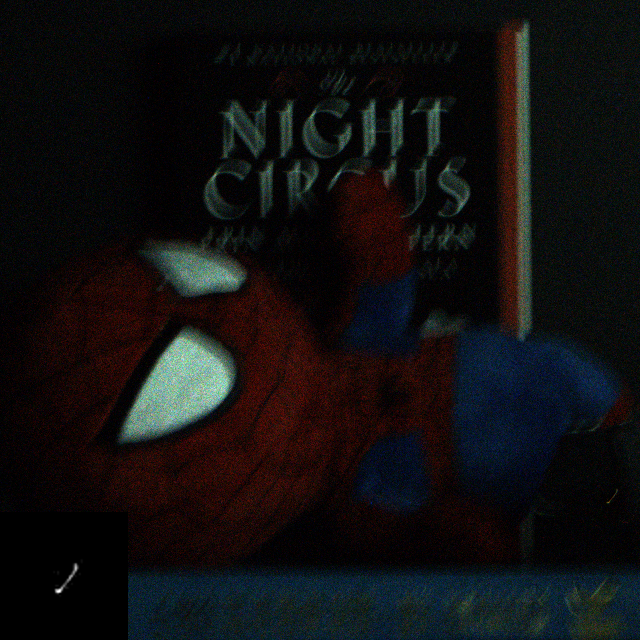

Photon-Limited Deblurring Dataset
Real-world dataset for evaluating deblurring algorithms in photon-limited scenes


Contains
- 30 low-light photon shot noise corrputed, blurred images in RAW format
- Corresponding blur kernel captured using a 30µm pinhole
- Ground truth for each image.
For a description of how to evaluate your deblurring algorithm on this dataset, refer to the file demo_synthetic.py in our Github repository.
Performance
Comparing granularity of alternate methods


DPIR
Purelet
P4IP
Wiener
Current Benchmarks
| Method | PSNR | SSIM |
|---|---|---|
| Unrolled-Poisson PnP [1] | 23.48 | 0.566 |
| Deep-Wiener Deconvolution [2] | 22.85 | 0.561 |
| Deep PnP Image Restoration [3] | 22.09 | 0.548 |
| PURE-LET [4] | 20.88 | 0.501 |
| RGDN [5] | 19.80 | 0.476 |
References
- [1] Sanghvi, Yash, Abhiram Gnanasambandam, and Stanley H. Chan. "Photon Limited Non-Blind Deblurring Using Algorithm Unrolling." arXiv preprint arXiv:2110.15314 2021
- [2] J. Dong, S. Roth, and B. Schiele, “Deep Wiener deconvolution: Wiener meets deep learning for image deblurring,” in 34th Conference on Neural Information Processing Systems, Curran Associates, Inc., 2020
- [3] K. Zhang, W. Zuo, S. Gu, and L. Zhang, “Learning deep CNN denoiser prior for image restoration,” in Proceedings of the IEEE Conference on Computer Vision and Pattern Recognition, pp. 3929–3938, 2017.
- [4] J. Li, F. Luisier, and T. Blu, “Pure-let image deconvolution,” IEEE Transactions on Image Processing, vol. 27, no. 1, pp. 92–105, 2017.
- [5] D. Gong, Z. Zhang, Q. Shi, A. van den Hengel, C. Shen, and Y. Zhang, “Learning deep gradient descent optimization for image deconvolution,” IEEE Transactions on Neural Networks and Learning Systems, vol. 31, no. 12, pp. 5468–5482, 2020